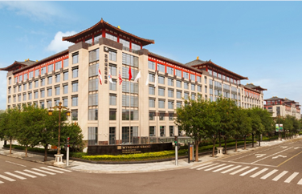
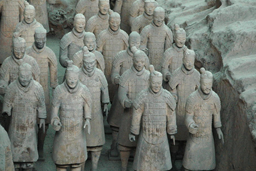

Important Dates
Special Session Proposals:
January 8, 2016
Paper submission:
January 8, 21 January 28, 2016
Acceptance Notification:
March 15 March 20, 2016
Final Submission:
April 10 April 17, 2016
Date of Workshop:
May 30 - June 1, 2016
Sponsors


News
March 29, 2016
The registration is now open.
January 20, 2016
Due to many requests, the initial submission deadline is January 8, 21 extended to January 28, 2016.
December 22, 2015
Due to the requests of authors, the deadline of the initial submission is now extended to January 21, 2016.
December 12, 2015
Plentary Speakers are now available.
December 5, 2015
Special Sessions are now available.
November 7, 2015
The submission site is now open.
April 1, 2015
The website is available.
The workshop will be held in Wyndham Grand Xian South Hotel
Venue
Wyndham Grand Xian South Hotel
Wyndham Grand Xi'an South is a world-class hotel that opened on August 26th, 2014. It is situated at the key position of the famous tourism site ‘Great Tang All Day Mall’ in Xi'an, just minutes away from Dayan Pagoda, and many famous historic heritage sites. Designed with both contemporary style and traditional Chinese architectural influence, it provides elegant and functional meeting and pre-function space.

Wyndham Grand Xian South Hotel
One can book rooms in Whndham Grand Xi'an South through their official website or Booking. Close to the conference venue, there are many other nice hotels in different levels. We list some of them as reference. Please note that the price fluctuates according to the market.
- 500 CNY/Night: Xi'an International Conference Center Qujiang Hotel (西安国际会议中心曲江宾馆),
Xi'an OKL Hotel (西安欧凯罗精品文化国际酒店)
- 350 CNY/Night: Lotus Hotel(西安芙蓉坊酒店大雁塔店), Xi'an Qujiang Bingyuan Hotel(西安曲江宾苑宾馆)
- 150 CNY/Night: Yan Ying International Yougth Hostel(西安雁影国际青年旅舍)
Xi'an, China
Xi'an is a beautiful city with a long history. Founded over 3,000 years ago, it is the oldest of the Four Great Ancient Capitals of China. In particular, it was the capital for the most important dynasties in Chinese history, including Qin, Han, and Tang. Xi'an is the eastern end point of the Silk Road and home to the world-famous Terracotta Army of Emperor Qin Shi Huang. Today it is a modern city, capital of the Shaanxi province with over 8 million inhabitants. Xi’an is one of the most important cities in China for higher education with over 40 universities and over 1 million students.

Terracotta Army of Emperor Qin Shi Huang
You can get the travel information from Travel page.